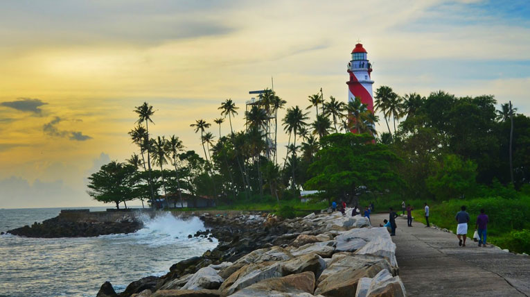
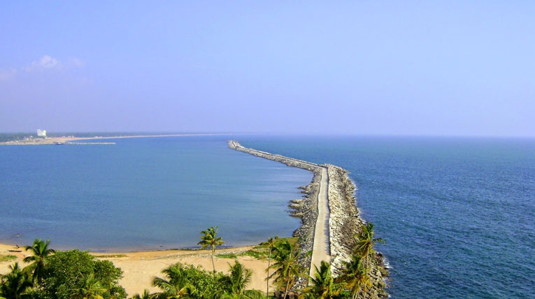

Kollam

Kollam also has a considerably large forest cover on its eastern side making home for several eco tourism projects like Shenduruni, Thenmala, Palaruvi etc. Kollam City boasts of a long history of political, commercial and cultural importance having found mention in several ancient travellers’ accounts. With a varied colonial past under the Portuguese, the Dutch and the British, Kollam has locations of historical importance like the Thangasseri light house, the St. Thomas Fort and cemetery built by the Portuguese, Thevally Palace, Cheenakkottaram etc. Besides, it also is the site of several old buildings constructed by the Travancore kings (its rulers during the pre-Independence times) in a variety of architectural styles, where many government offices still function. Kollam has been the centre of cashew industry in Kerala from the time of the Portuguese in 16th c. Having hundreds of working cashew factories in the district, Kollam still continues to be the largest processed cashew exporter in India. Neendakara and Thangasseri, the two fishing harbours and ports in Kollam, support a thriving marine industry providing a variety of employment and livelihood to people in large numbers.
Hot Tourist Spots
Lighthouse

Ashtamudi Lake

Chavara
